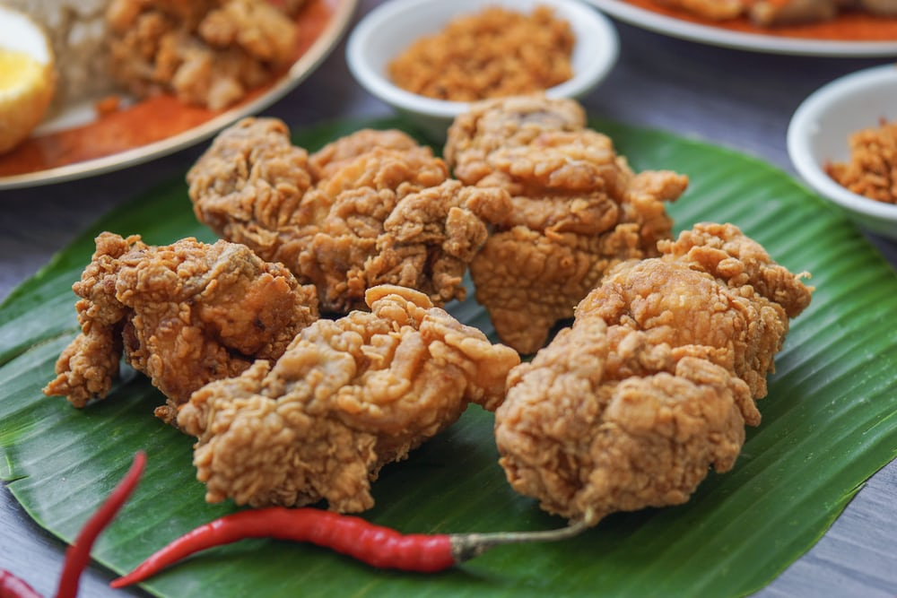

Featured recipe:Fried Chicken
Southern fried chicken, also known simply as fried chicken, is a dish consisting of chicken pieces that have been coated with seasoned flour or batter and pan-fried, deep fried, pressure fried, or air fried. The breading adds a crisp coating or crust to the exterior of the chicken while retaining juices in the meat. Broiler chickens are most commonly used. The first dish known to have been deep fried was fritters, which were popular in the European Middle Ages. However, it was the Scottish who were the first Europeans to deep fry their chicken in fat (though without seasoning). Meanwhile, many West African peoples had traditions of seasoned fried chicken (though battering and cooking the chicken in palm oil). Scottish frying techniques and West African seasoning techniques were combined by enslaved Africans and African-Americans in the American South.


Cake is a form of sweet food made from flour, sugar, and other ingredients, that is usually baked. In their oldest forms, cakes were modifications of bread, but cakes now cover a wide range of preparations that can be simple or elaborate, and that share features with other desserts such as pastries, meringues, custards, and pies

Jeera rice is a simple rice dish flavored with cumin seeds. Jeera Rice or Cumin Rice makes a delicious side dish which can be served with any meal and makes it festive